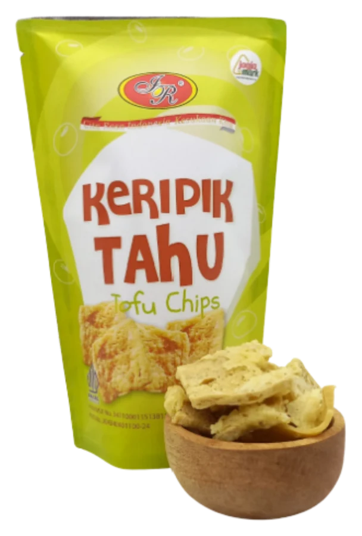
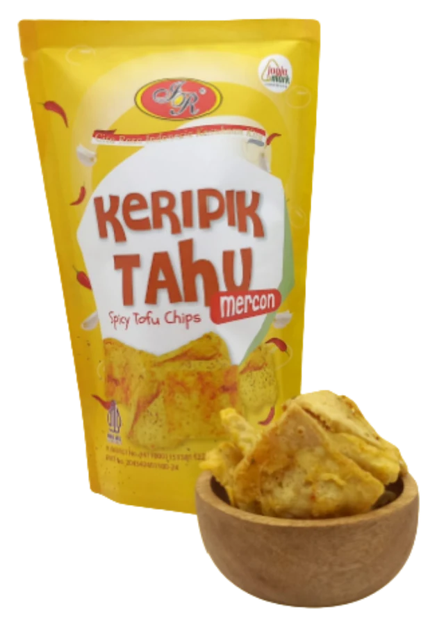

PT Intan Rahmadhani Santosa
IR Snack adalah UMKM dari Sleman, Yogyakarta yang mengolah pare, jamur tiram, dan tahu menjadi keripik. Usaha ini berawal pada 2000 dari pesanan kue kering dan emping jagung yang dipasarkan ke warung serta pasar tradisional. Setelah memasuki pasar modern pada 2003, IR Snack berkembang dengan beragam varian produk yang kini tersedia di puluhan supermarket. Pada 2023, usaha ini resmi berbadan hukum sebagai PT Intan Rahmadhani Santosa dan produknya berhasil menembus pasar ekspor Malaysia.
Yang membuat kami berbeda
Enam hal yang kami jaga di setiap bungkus keripik IR Snack.
Bahan baku pilihan
Sayur dipilih dari petani organik, ditunjang bahan bersertifikat halal.
Bebas gluten
Dibuat dengan tepung beras, aman untuk yang menghindari gluten.
Tanpa bahan hewani
Tanpa telur dan bahan hewani lainnya, cocok untuk vegetarian.
Renyah, tidak berminyak
Mesin spinner membuat minyak tidak menempel, keripik jamur tetap renyah dan ringan.
Pedas yang ramah
Varian mercon memakai bumbu cabai pedas sedang, masih bisa dinikmati semua orang.
Legal & halal
Memiliki SP-PIRT, sertifikat halal, dan merek terdaftar HKI.
Visi & Misi
Visi
Menjadikan produsen keripik sayur yang halal, sehat, dan andalan ekspor Yogyakarta.
Misi
- Menggunakan bahan baku pilihan dari petani organik dan bahan penunjang yang bersertifikasi halal.
- Menjaga kualitas, kuantitas, dan kontinuitas produksi serta sigap menangkap peluang.
- Memperluas jaringan dan berinovasi mengikuti perkembangan pasar.
- Menerapkan manajemen pengolahan dan pemasaran yang berstandar.
- Menerima dan memproses kritik & saran agar lebih baik.
Ingin tahu lebih banyak?
Lihat perjalanan lengkap kami atau hubungi tim IR Snack untuk kerja sama.
